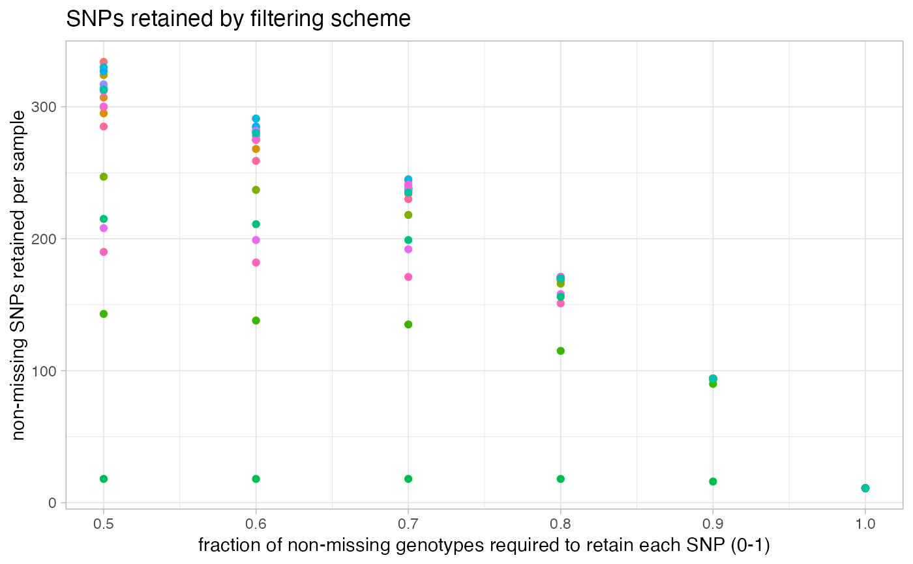
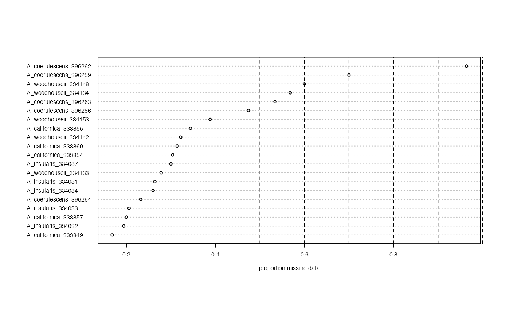

Vizualise missing data per sample, remove samples above a missing data cutoff
missing_by_sample.RdThis function can be run in two ways: 1) Without 'cutoff' specified. This will vizualise the amount of missing data in each sample across a variety of potential missing data cutoffs. Additionally, it will show you a dotplot ordering the amount of overall missing data in each sample. Based on these visualizations, you can make an informed decision on what you think might be an optimal cutoff to remove samples that are missing too much data to be retained for downstream analyses. 2) with 'cutoff' specified. This option will show you the dotplot with the cutoff you set, and then remove samples above the missing data cutoff you set, and return the filtered vcf to you.
missing_by_sample(vcfR, popmap = NULL, cutoff = NULL)Arguments
- vcfR
a vcfR object
- popmap
if specifies, it must be a two column dataframe with columns names 'id' and 'pop'. IDs must match the IDs in the vcfR object
- cutoff
a numeric value between 0-1 specifying the maximum proportion of missing data allowed in a sample to be retained for downstream analyses
Value
if 'cutoff' is not specified, will return a dataframe containing the average depth and proportion missing data in each sample. If 'cutoff' is specified, the samples falling above the missing data cutoff will be removed, and the filtered vcfR object will be returned.
Details
Note: This decision is highly project specific, but these visualizations should help you get a feel for how very low data samples cannot be rescued simply by a missing data SNP filter. If you want to remove specific samples from your vcf that cannot be specified with a simple cutoff refer to this great tutorial which is the basis for the code underlying this function.
Examples
missing_by_sample(vcfR = SNPfiltR::vcfR.example)
#> No popmap provided


#> indiv filt snps.retained
#> 1 A_californica_333849 0.5 334
#> 2 A_californica_333854 0.5 307
#> 3 A_californica_333855 0.5 295
#> 4 A_californica_333857 0.5 324
#> 5 A_californica_333860 0.5 300
#> 6 A_insularis_334031 0.5 313
#> 7 A_insularis_334032 0.5 330
#> 8 A_insularis_334033 0.5 327
#> 9 A_insularis_334034 0.5 314
#> 10 A_insularis_334037 0.5 317
#> 11 A_woodhouseii_334133 0.5 312
#> 12 A_woodhouseii_334134 0.5 208
#> 13 A_woodhouseii_334142 0.5 300
#> 14 A_woodhouseii_334148 0.5 190
#> 15 A_woodhouseii_334153 0.5 285
#> 16 A_coerulescens_396256 0.5 247
#> 17 A_coerulescens_396259 0.5 143
#> 18 A_coerulescens_396262 0.5 18
#> 19 A_coerulescens_396263 0.5 215
#> 20 A_coerulescens_396264 0.5 313
#> 21 A_californica_333849 0.6 291
#> 22 A_californica_333854 0.6 275
#> 23 A_californica_333855 0.6 268
#> 24 A_californica_333857 0.6 284
#> 25 A_californica_333860 0.6 275
#> 26 A_insularis_334031 0.6 281
#> 27 A_insularis_334032 0.6 291
#> 28 A_insularis_334033 0.6 285
#> 29 A_insularis_334034 0.6 278
#> 30 A_insularis_334037 0.6 282
#> 31 A_woodhouseii_334133 0.6 281
#> 32 A_woodhouseii_334134 0.6 199
#> 33 A_woodhouseii_334142 0.6 275
#> 34 A_woodhouseii_334148 0.6 182
#> 35 A_woodhouseii_334153 0.6 259
#> 36 A_coerulescens_396256 0.6 237
#> 37 A_coerulescens_396259 0.6 138
#> 38 A_coerulescens_396262 0.6 18
#> 39 A_coerulescens_396263 0.6 211
#> 40 A_coerulescens_396264 0.6 280
#> 41 A_californica_333849 0.7 244
#> 42 A_californica_333854 0.7 234
#> 43 A_californica_333855 0.7 238
#> 44 A_californica_333857 0.7 238
#> 45 A_californica_333860 0.7 236
#> 46 A_insularis_334031 0.7 238
#> 47 A_insularis_334032 0.7 245
#> 48 A_insularis_334033 0.7 238
#> 49 A_insularis_334034 0.7 240
#> 50 A_insularis_334037 0.7 237
#> 51 A_woodhouseii_334133 0.7 239
#> 52 A_woodhouseii_334134 0.7 192
#> 53 A_woodhouseii_334142 0.7 241
#> 54 A_woodhouseii_334148 0.7 171
#> 55 A_woodhouseii_334153 0.7 230
#> 56 A_coerulescens_396256 0.7 218
#> 57 A_coerulescens_396259 0.7 135
#> 58 A_coerulescens_396262 0.7 18
#> 59 A_coerulescens_396263 0.7 199
#> 60 A_coerulescens_396264 0.7 235
#> 61 A_californica_333849 0.8 170
#> 62 A_californica_333854 0.8 170
#> 63 A_californica_333855 0.8 168
#> 64 A_californica_333857 0.8 171
#> 65 A_californica_333860 0.8 170
#> 66 A_insularis_334031 0.8 170
#> 67 A_insularis_334032 0.8 171
#> 68 A_insularis_334033 0.8 170
#> 69 A_insularis_334034 0.8 170
#> 70 A_insularis_334037 0.8 171
#> 71 A_woodhouseii_334133 0.8 171
#> 72 A_woodhouseii_334134 0.8 158
#> 73 A_woodhouseii_334142 0.8 171
#> 74 A_woodhouseii_334148 0.8 151
#> 75 A_woodhouseii_334153 0.8 169
#> 76 A_coerulescens_396256 0.8 166
#> 77 A_coerulescens_396259 0.8 115
#> 78 A_coerulescens_396262 0.8 18
#> 79 A_coerulescens_396263 0.8 156
#> 80 A_coerulescens_396264 0.8 170
#> 81 A_californica_333849 0.9 94
#> 82 A_californica_333854 0.9 94
#> 83 A_californica_333855 0.9 94
#> 84 A_californica_333857 0.9 94
#> 85 A_californica_333860 0.9 94
#> 86 A_insularis_334031 0.9 94
#> 87 A_insularis_334032 0.9 94
#> 88 A_insularis_334033 0.9 94
#> 89 A_insularis_334034 0.9 94
#> 90 A_insularis_334037 0.9 94
#> 91 A_woodhouseii_334133 0.9 94
#> 92 A_woodhouseii_334134 0.9 93
#> 93 A_woodhouseii_334142 0.9 94
#> 94 A_woodhouseii_334148 0.9 94
#> 95 A_woodhouseii_334153 0.9 94
#> 96 A_coerulescens_396256 0.9 94
#> 97 A_coerulescens_396259 0.9 90
#> 98 A_coerulescens_396262 0.9 16
#> 99 A_coerulescens_396263 0.9 94
#> 100 A_coerulescens_396264 0.9 94
#> 101 A_californica_333849 1.0 11
#> 102 A_californica_333854 1.0 11
#> 103 A_californica_333855 1.0 11
#> 104 A_californica_333857 1.0 11
#> 105 A_californica_333860 1.0 11
#> 106 A_insularis_334031 1.0 11
#> 107 A_insularis_334032 1.0 11
#> 108 A_insularis_334033 1.0 11
#> 109 A_insularis_334034 1.0 11
#> 110 A_insularis_334037 1.0 11
#> 111 A_woodhouseii_334133 1.0 11
#> 112 A_woodhouseii_334134 1.0 11
#> 113 A_woodhouseii_334142 1.0 11
#> 114 A_woodhouseii_334148 1.0 11
#> 115 A_woodhouseii_334153 1.0 11
#> 116 A_coerulescens_396256 1.0 11
#> 117 A_coerulescens_396259 1.0 11
#> 118 A_coerulescens_396262 1.0 11
#> 119 A_coerulescens_396263 1.0 11
#> 120 A_coerulescens_396264 1.0 11
missing_by_sample(vcfR = SNPfiltR::vcfR.example, cutoff = .7)
#> 1 samples are above a 0.7 missing data cutoff, and were removed from VCF
 #> ***** Object of Class vcfR *****
#> 19 samples
#> 1 CHROMs
#> 500 variants
#> Object size: 0.7 Mb
#> 35 percent missing data
#> ***** ***** *****
#> ***** Object of Class vcfR *****
#> 19 samples
#> 1 CHROMs
#> 500 variants
#> Object size: 0.7 Mb
#> 35 percent missing data
#> ***** ***** *****